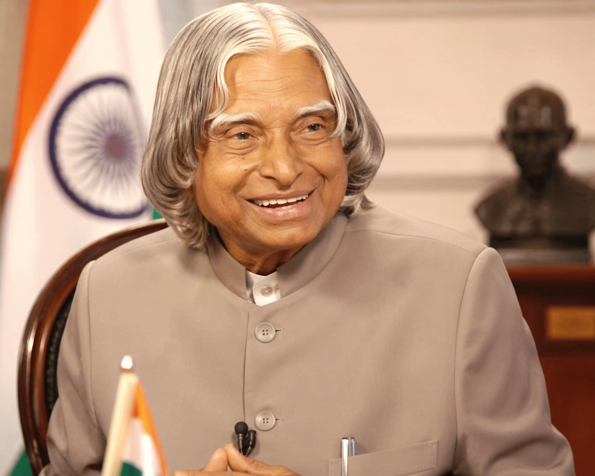

His Simplicity
Even after becoming the President of India, Dr. Kalam remained approachable and grounded. His life reminds me that true success does not need arrogance to prove itself.
A Tribute Page
Scientist, teacher, dreamer, and one of the most inspiring leaders India has known.
I admire Dr. Kalam because he showed that greatness can walk hand in hand with humility. He rose from a modest background, contributed to India’s scientific progress, and still remained deeply committed to students, learning, and service to the nation.
Why I Adore Him
What Makes Him Special
Even after becoming the President of India, Dr. Kalam remained approachable and grounded. His life reminds me that true success does not need arrogance to prove itself.
He was not just a brilliant scientist, but also a lifelong learner. The way he encouraged young minds to stay curious makes him unforgettable to me.
Dr. Kalam dedicated his knowledge and talent to the progress of India. His work in aerospace and defense made him a symbol of dedication and vision.
Why He Inspires Me
What I find most beautiful about A. P. J. Abdul Kalam is that he never stopped believing in the power of ordinary people. He spoke to students with hope, encouraged them to dream beyond fear, and lived in a way that made those words truly believable. His life was not just about achievements, but about inspiring others to discover their own potential.
I adore him because he represents discipline, kindness, intelligence, and patriotism all at once. He proved that someone can reach great heights and still remain humble, gentle in speech, and pure in intention. In a world where success often changes people, he remained grounded. That rare balance is one of the strongest reasons he continues to inspire millions.
Another reason he inspires me is his deep love for learning and teaching. Even after becoming President, he chose to spend time with students, answering their questions and encouraging them to think big. He believed that the youth are the true strength of a nation, and he dedicated his life to shaping their future.
To me, Dr. Kalam is more than a public figure. He is a symbol of hope and a guiding light. He reminds me that real leadership is not about power, but about lifting others, sharing knowledge, and spreading positivity. His life teaches us that even a simple person, with strong values and determination, can create a lasting impact on the world.
What inspires me even more about A. P. J. Abdul Kalam is his journey from a humble background to becoming one of the most respected leaders in India. He faced many struggles in his early life, yet he never gave up on his dreams. Instead of letting difficulties stop him, he used them as motivation to work harder. This teaches me that success is not about where we start, but about our determination and effort.
He also showed us the true meaning of simplicity. Even after achieving so much fame and recognition, he lived a simple life and stayed connected to his roots. He valued honesty, hard work, and respect for others. This makes me realize that greatness is not measured by wealth or power, but by character and values.
Another thing I deeply admire is his positive attitude towards life. He always encouraged people to think differently, to innovate, and to believe in themselves. His words were not just speeches—they were lessons for life. Whenever I feel unsure or afraid of failure, his thoughts give me confidence to keep moving forward.
Lastly, his legacy continues to guide us even today. Though he is no longer with us, his ideas, books, and teachings still inspire millions of young minds. He showed us that one person can make a difference, and that true success lies in serving others and contributing to society. His life motivates me to dream big and also work hard to turn those dreams into reality.
"Dream, dream, dream. Dreams transform into thoughts and thoughts result in action."
Memorable Glimpses

